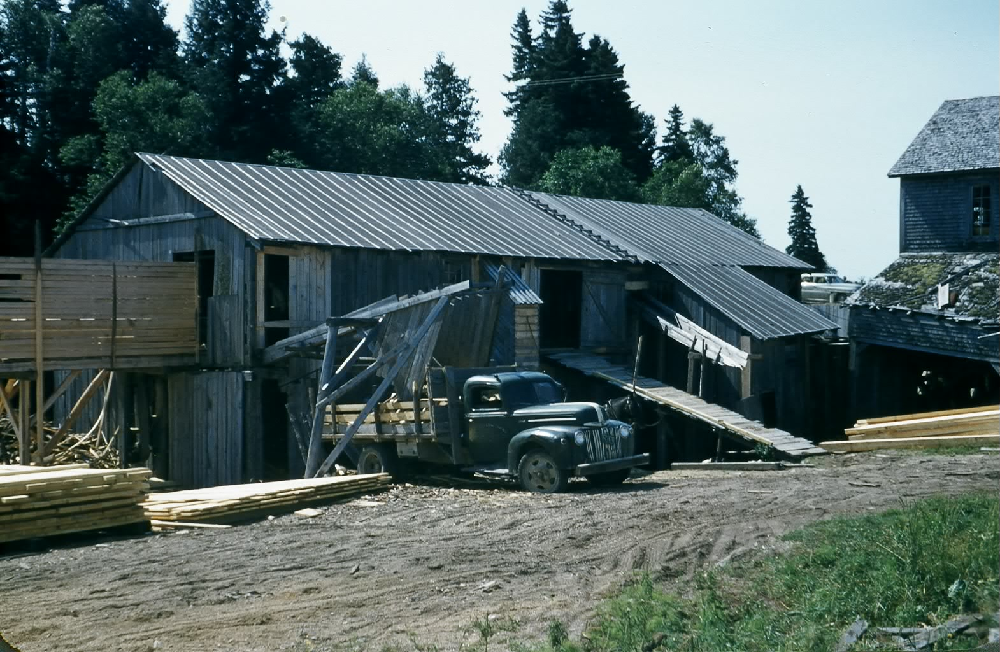
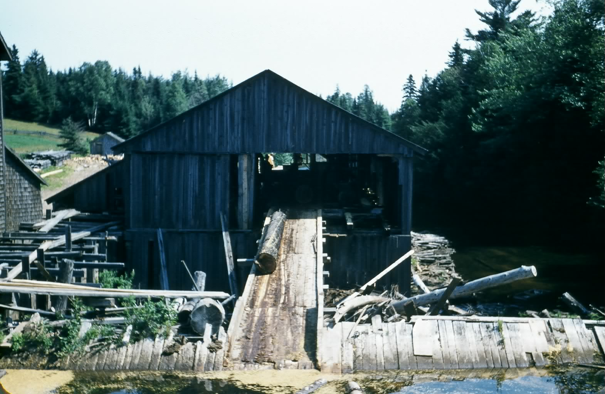

The Family Chronicle
No. 121 July 19, 2006
____________________________________________________________________


I had some of my slides scanned recently and came across the above photos of Fowlie’s mill probably taken in the 1950’s. (Glendenning Collection)
Meat
We had our own meat, especially in the winter. We did not have electricity, hence no refrigeration although we did have an icehouse one year, so the amount and kind of meat varied from season to season. In winter, meat could be kept hanging in the shed with portions cut off as needed; in summer when an animal was butchered most of it was sold in town or to neighbours but some was kept for our own use. In later years, Norman would butcher a young heifer and peddle it from door to door around Black River. Jack Gibson was a butcher and often peddled meat and later Will Harris was a regular meat peddler.
Butchering was done just inside the large barn doors. The animal was brought to the door and its head held down and steadied with the aid of a ring buried in the barn floor. A sledge hammer or poll axe was used to stun the animal then its throat was cut. Following that, the animal would be skinned starting with the hind legs. A short stick, a spreader, was used to spread the hind legs and this was attached to a set of blocks (pulleys and ropes) so that the animal could be hoisted. The butchers continued to skin the animal moving down towards the head; from time to time the animal was raised to make it easier to skin and to keep the fresh meat from coming in contact with the floor. After skinning, the front of the animal was opened, again from top down and the intestines and organs removed. The intestines were dragged to the manure shed or buried. The heart and liver were saved and were considered, at least by me, as a special treat.
For pigs, a fire was lighted under a large black pot or a barrel and the water brought to a boil. Then the pig was killed and hoisted on a pulley. Next a large barrel was placed under the pig and filled with the boiling water. The pig was dipped into the boiling water to make it easier to scrape off the bristles. One had to be careful not to have the water too hot, it would scald and discolour the carcass, or too cool or it would not lift the bristles and therefore would be difficult to scrape clean.
Young calves were killed at about 4 weeks and sold as veal. Veil was often delivered directly to a restaurant. I remember delivering many a veal to Cheverie’s restaurant on Cunard Street. Carol and I ate their once and I remember seeing a note on the menu stating “Our Restaurant is supervised by a Registered Nurse.”
Sometimes Mum made head cheese or potted meat using the pig’s feet. Many people had rabbit but I cannot remember having any at our house.
Of course, we also had chicken, and an occasional turkey, goose and duck. Chickens were killed by cutting off their heads. Sometimes boiling water was poured over the chicken to help loosen the feathers. When John took his course in Newcastle, he learned to kill chickens with the use of a sharp knife into the brain. Then they could be plucked very easily. This made the task so much easier.
Each time we butchered, a piece of fresh meat went to Aunt Tine. She lived in Loggieville and at that time people traveled to Chatham by way of Loggieville.
The only meat I can remember buying in the early years was bologna from Adam’s store across the River. Fried bologna with eggs was common for breakfast, often we had bologna sandwiches in our lunch boxes and occasionally we had bologna for dinner or supper. (In my day, dinner was at noon and supper was an evening meal. Both were full meals.)
The Family Chronicle (Copyright) is an occasional newsletter published by Don Glendenning and posted on the family website. It is intended to share information about my family, community and the times in which I grew up. While every effort is made to be accurate, errors are likely to occur. Comments, enquiries and information may be sent to 62 Queen Elizabeth Drive, Charlottetown, PEI, C1A 3A9. Tel: 902 892 5859. Email: dglende@auracom.com Web: www.glendenning.net/don